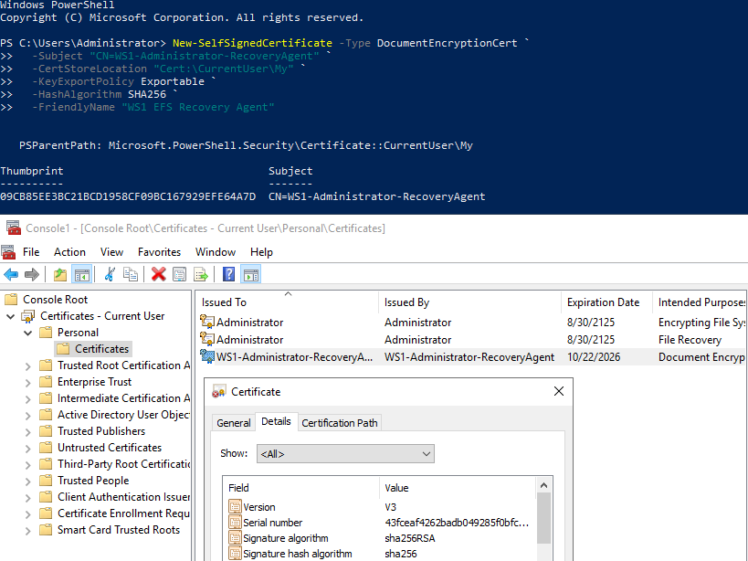

Portfolio
In this page, I list some of the fundamental skills I learnt over the years. I also showcase some off-work projects I'm elaborating as the result of my self-driven passion for IT and Data.
Feel free to open a pull request if you see any fix/suggestion to be made, thank you!
Core Competencies
- Soft skills : Highly organized, proactive, meticulous, team-oriented, tech-savvy, resilient, solution-focused
- Languages: Python, SQL, MATLAB
- Tools
- IDE : VS Code, Jupyter Notebook
- Scripting : Shell, Bash
- Version control : Git Bash, GitHub
- DB management
- SQL : SQL Server, PostgreSQL
- NoSQL : MongoDB
- Workflow orchestration : Mage, Airflow
- Visualization : Excel, Tableau
- Cloud resources
- CDN : CloudFront
- IaC : Terraform, CloudFormation
- PaaS : Beanstalk
- Computing : Compute Engine, EC2, RDS
- Storage : Cloud Storage, S3
Projects
- CompTIA - Security+ ( in progress )
- CompTIA - Network+
- LinkedIn - Optimizing Enterprise Security and Productivity Using M365
- ISC2 - Certified in Cybersecurity (CC)
- AWS - Certified Cloud Practitioner (CCP)
- Atlassian - Agile Project Management Professional
- PMI - Project Management Professional (PMP)
- WorldQuant University - Applied Data Science Lab
- freeCodeCamp - Data Analysis with Python
- DataTalks.Club - Data Engineering Zoomcamp
- IBM - Docker Essentials: A Developer Introduction
- IBM - Applied Data Science with Python
- LinkedIn - Master Microsoft Excel
- Microsoft and LinkedIn - Career Essentials in Cybersecurity
Network and Security Architecture
Windows Server 19 Administration and Hardening



This repository documents a varied sequence of Windows Server 2019 administration and hardening works.
It covers the 101s on environment setup, domain and policy configuration, encryption and recovery mechanisms, baseline auditing,
and PowerShell automation. Each section includes configuration steps, verification checks showing the progression from a fresh installation to a secured server environment.
Data Analysis
In this repository, I responded to the questions of the study cases of the course 8 week SQL challenge by Danny Ma.
From essential SQL syntax to the elaboration of more intricate structures compound by CTEs, window functions and recursive queries,
these challenges were a splendid way to solidify the hands-on core knowledge in SQL.
In this repo, I showcase some of the off-work dashboard creations I elaborated so far using mainly Tableau. The common denominator of these micro-projects is the use of
Data blending, LOD expressions, Calculated fields, Bin creation and Tooltip customization, amongst others.
You also can directly take a look at my Tableau public profile instead of checking out my GitHub repository.
The purpose of this repository is to showcase some examples of Web Scraping I created by utilizing Python with BeautifulSoup.
I explain how to spot and parse the information from a HTML script in our browser Inspector,
so that we can fetch it into csv/tsv flat files or more structured files like jsons.
Some of its preferable practices are also detailed along the narration of this repo's markdown file.
Good foundational hands-on knowledge of Data Analysis with Python.
From loading and cleaning flat files with Pandas to performing mathematical operations and statistical analysis with Numpy,
I also created diverse visualizations using Matplotlib and Seaborn.
Note that instead of using Replit, I developed, debugged and validated the python modules for each problem using VS Code in my local machine.
Data Engineering
GCP Uber end-to-end data pipeline
In this project, I designed and detailed the core stages of an end-to-end data pipeline using Google Cloud Platforms as the main resource/service provider.
This was an excellent occasion to review key notions on Data modeling. The orchestration of the ETL process was executed with Mage.
Azure Tokyo Olympics end-to-end data pipeline
From data ingestion into Data Factory to a brief elaboration of some Charts and Graphs within Synapse Analytics,
in this project I elaborated an end-to-end data pipeline utilizing resources from Microsoft Azure. Apache Spark was employed for data processing.
DTC - Data Eng. Zoomcamp capstone project
After brushing up some of the hands-on concepts of Containerization, Workflow orchestration, Data warehousing and Analytics engineering,
in the final section of this bootcamp I'm elaborating an end-to-end data pipeline with OLAP integration
by means of Terraform as IaC and Cloud Run as serverless compute platform, amongst other frameworks and resources.